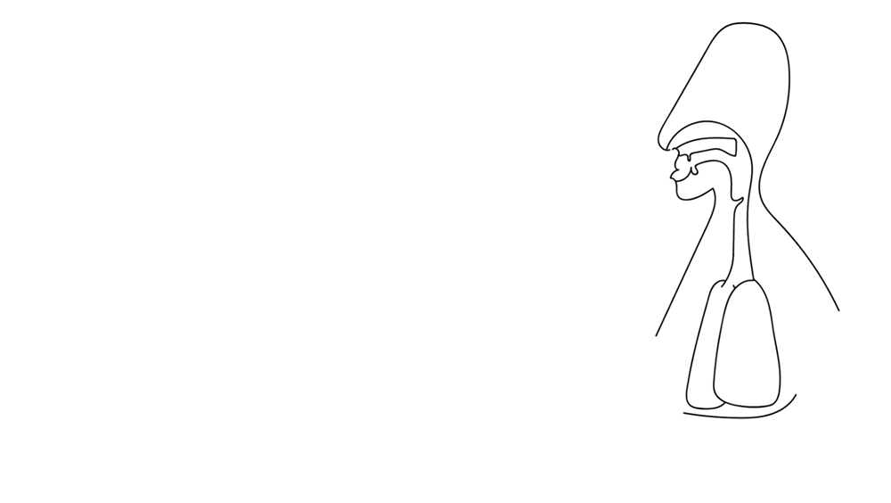
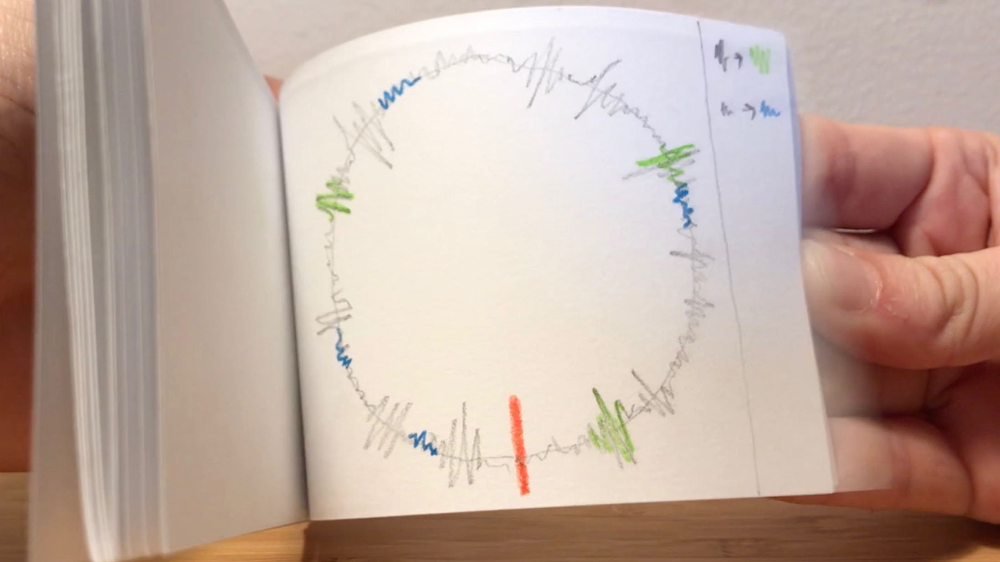

Babble: an anatomically-inspired vocalization machine
While many speech synthesis machines focus on the transformation of text into speech via a completely digital pipeline, few engage directly with the anatomical origins of vocalization. Further, few explore vocalization as a form of play that can exist beyond “task” scenarios. Babble is an anatomically-inspired vocalization machine designed for playful voice generation.
Status: in progress
Concept development

What if we could turn sounds (the figurative "building blocks" of spoken language) into literal building blocks? What kind of language can we generate by playing with these blocks? Watch the full prototyping video here (with New School account).
Users interact with a large-scale, sculptural, abstracted vocal tract in order to produce sounds. Watch the full prototyping video here (with New School account).
Early paper prototype: flipbook shows a potential exploration of language change over time.
Early paper prototype: series of cards walk through a user's experience of comparing "actual" sounds to various languages' onomatopoeic representations (e.g. "bam", "splash").
Written and visual presentations